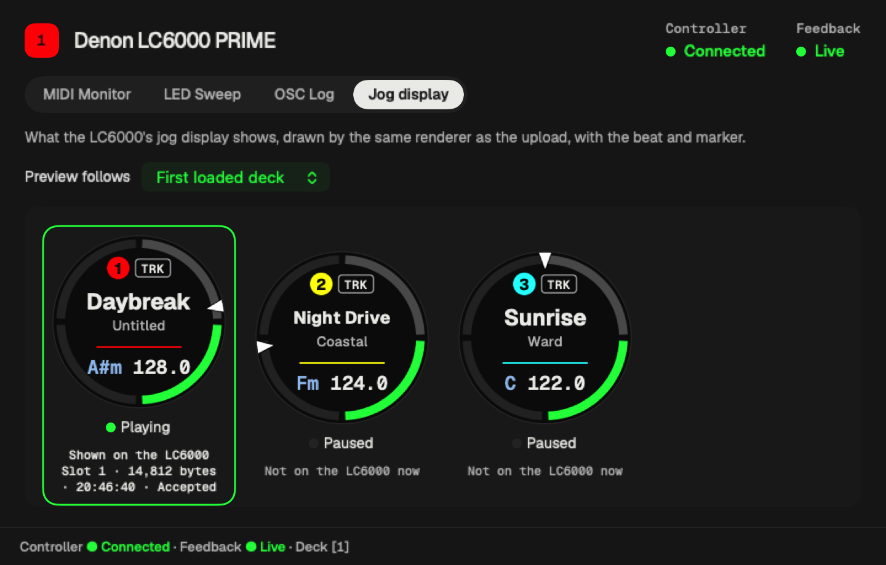
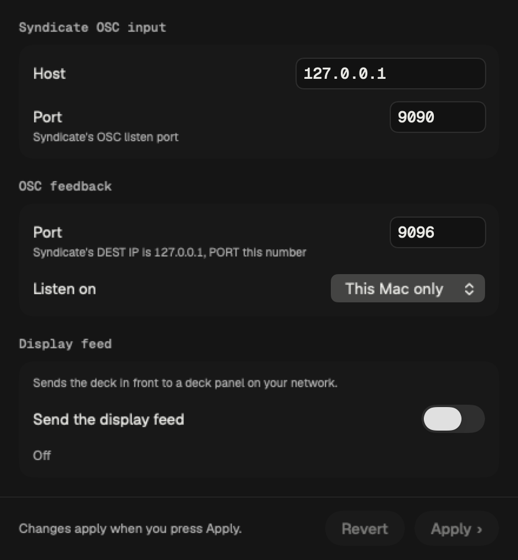

Support
Set up and troubleshoot DeckBridge
Four settings in Syndicate, once. DeckBridge opens the same steps on first launch, and you can reopen them from the panel’s Setup guide or Settings › Setup Guide….
Set up Syndicate’s OSC
When it’s working, the panel shows CONTROLLER ● CONNECTED and FEEDBACK ● LIVE.
Settings → OSC
Turn OSC INPUT ENABLED on. The listen port is
9090.Settings → OSC Feedback
Set DEST IP to
127.0.0.1(or this Mac’s address if Syndicate runs on another Mac) and PORT to9096.Settings → OSC Feedback → Subscriptions
Turn on these subscriptions:
- Playing
- PlayPending
- Loaded and TrackInfo
- Position/Progress
- TempoSlider/TempoSliderEnabled
- Cues
- BPM/Sync
- Loop
- Volume
Settings → MIDI
Turn the LC6000 PRIME’s MIDI input off in Syndicate. Otherwise Syndicate’s own mapping and DeckBridge would both react to every button.
The jog display
Show the deck on the jog display is on by default (Settings › Controller). The LC6000’s jog display shows the deck in front: its title, artist, key and BPM, Syndicate’s master clock around the ring, and the deck’s own bar in the needle.
Settings › Controller › Firmware (shown with the jog display on): leave it on Denon unless your unit runs custom firmware.
Settings › Controller › Key display (with the jog display on) writes keys as Syndicate does, traditional or Camelot. Match Syndicate’s own key setting.
Diagnostics › Jog display shows the same picture on your Mac for every deck, even with no LC6000 connected.

Needle Drop: the channel fader
Needle Drop moves the deck’s channel fader in Syndicate, from where it is (Relative) or straight to where you touch (Jump) (Settings › Controller, on by default). With Shift, it seeks while you touch it.
Relative needs Syndicate’s Volume feedback: turn it on in Syndicate’s OSC feedback, or the fader can’t start from where it is.
The display feed
DeckBridge can send the deck in front to a display on your local network, unencrypted to the one address you set (Settings › Syndicate › Display feed, off by default).
Give it the display’s host and port. The status line under them says whether it’s sending. While it’s on, DeckBridge also asks Syndicate for its Meter and PhaseOffset feedback, and says so if they’re off.
Leave it off if you have no display listening.

Troubleshooting questions
Why do the LEDs stay dark when the controller works?
DeckBridge lights the controller from Syndicate’s OSC feedback. Check step 2 (DEST IP and PORT 9096) and that every subscription in step 3 is on. The panel’s Why no LEDs? line says which part is missing.
How do I switch between decks 1 to 4?
Use the LC6000’s own deck layers: Shift + deck select. DeckBridge follows the layer, releases anything held on the old deck and repaints the lights. To drive one fixed deck instead, turn off Follow controller layers in Settings and pick the deck in the panel.
Why does nothing happen when I press buttons?
Quit any other DJ app that was using the LC6000 PRIME first, then power-cycle the controller: some apps switch its MIDI mode until it restarts. Then check Diagnostics › MIDI Monitor: each button press should show up there.
Can Syndicate run on another Mac?
Yes. Set the Syndicate host in DeckBridge’s Settings to that Mac’s IP address, and set Listen on to All networks. macOS asks once for local-network permission; allow it, or no feedback arrives.
Can I try it without a controller?
Yes. Click Demo controller: Off in the panel. A scripted controller plays against a simulated session. Nothing goes to the network unless you turn on the display feed, and then only unencrypted to the one address you set on your local network.
My controller isn’t an LC6000. Can I help add it?
Yes. With your controller plugged in, click Help add it… in the panel, or choose Controller not found? from the Controller menu in Settings › Controller, and follow the steps: press, move and turn each control while DeckBridge records what it sends. It takes about five minutes. At the end, Save… the file or click Email to DeckBridge, which opens a message in your own mail app. Nothing is sent unless you send it.
Contact support
Email deckbridge@ericdahl.dev. If you can, include what the panel shows and the Copy details text.